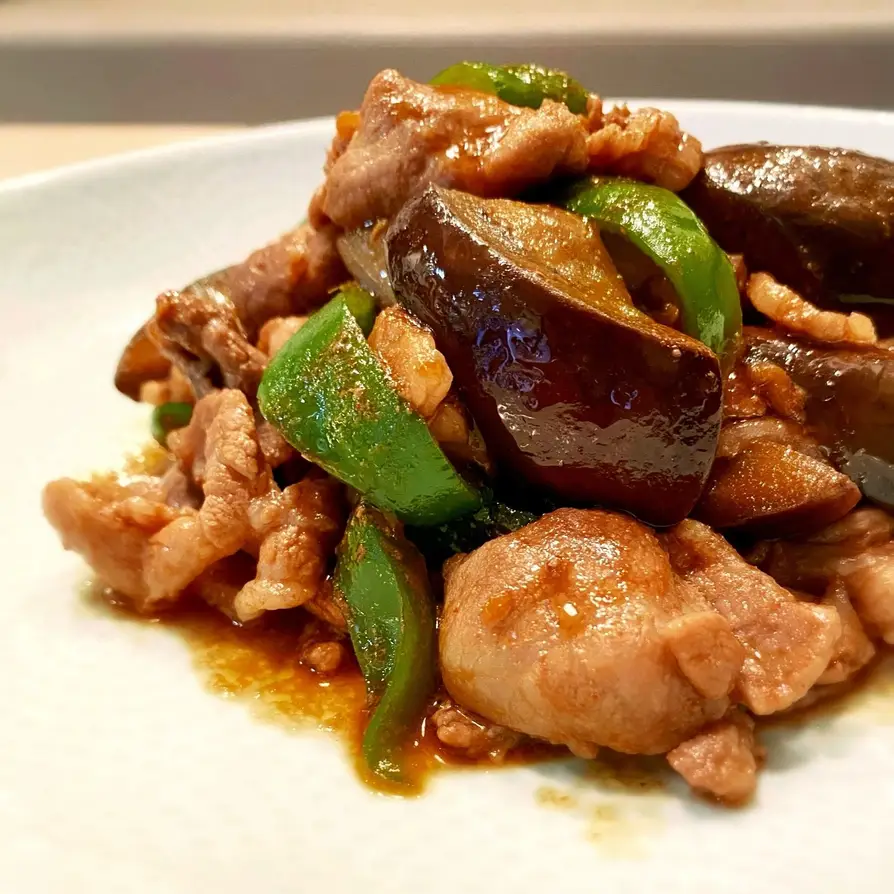
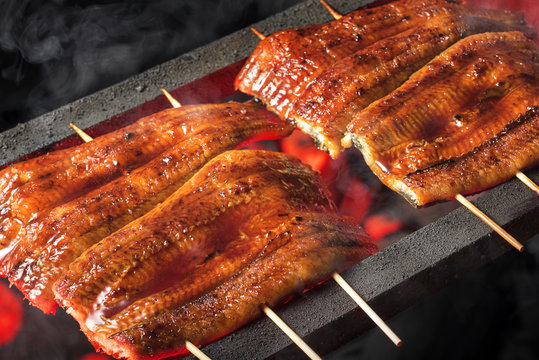
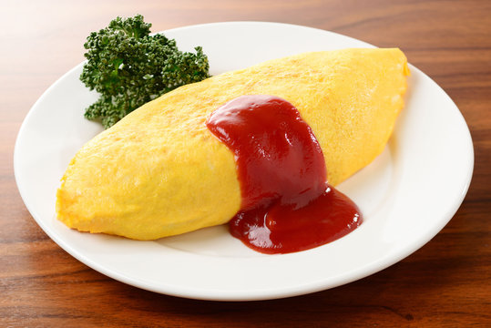
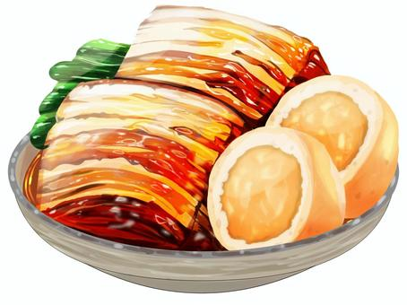
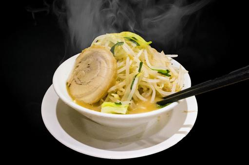
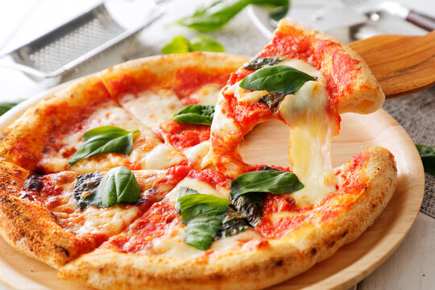
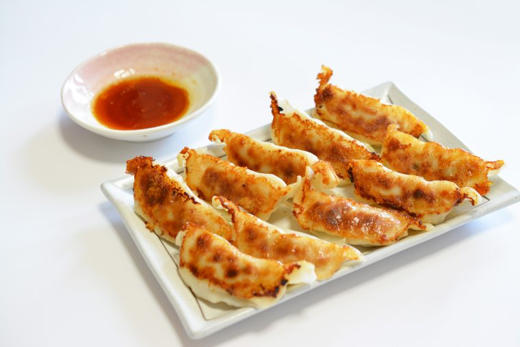

最新のレシピ
甘辛豚肉と茄子の味噌炒め

材料:
- 豚肉薄切り(肩ロースorバラ) - 250g
- 茄子 - 2本
- ピーマン - 1～2個
- 酒，黒胡椒 - 少々
- コマ油/サラダ油 - 各大さじ1/2
- ↓＜甘辛ダレ＞↓
- 甜麺醤 - 大さじ1/2
- コチュジャン - 小さじ1
- 醤油 - 小さじ1
- 大葉 - 適量
- 酒 - 大さじ1.5
- みりん - 大さじ1/2
- ニンニクチューブ - 3cm
作り方:
- ピーマン・茄子を乱切りにする．
- 豚肉を一口大に切り下味をつける．
- 甘辛ダレを混ぜておく．
- 先にごま油・サラダ油を半量ずつ入れた冷たいフライパンで切った茄子に油をまとわせる．
- 中火をかけ，フライパンが熱くなったらごま油少量を足してピーマンを加えて全体を炒めて一旦取り出す．
- フライパンのからスペースに甘辛ダレを流して津フツ付したら全体に絡めて完成．
鰻の蒲焼

材料:
- 鰻 - 1尾
- 醤油 - 50ml
- みりん - 50ml
- 砂糖 - 大さじ2
- 酒 - 50ml
作り方:
- 鰻を開き、背骨を取り除く。
- 醤油、みりん、砂糖、酒を混ぜてタレを作る。
- 鰻を串に刺し、グリルで焼く。
- 焼きあがった鰻にタレを塗り、再度焼く。
- タレを塗る工程を2回繰り返す。
- お皿に盛り付けて完成。
オムライス

材料:
- ご飯 - 2杯分
- 鶏肉 - 100g
- 玉ねぎ - 1/2個
- ケチャップ - 大さじ3
- 卵 - 3個
- 牛乳 - 大さじ2
- 塩 - 少々
- こしょう - 少々
作り方:
- フライパンに油を熱し、鶏肉と玉ねぎを炒める。
- ご飯を加え、ケチャップ、塩、こしょうで味を調える。
- 別のフライパンに油を熱し、卵と牛乳を混ぜたものを流し込む。
- 半熟状になったら、ご飯を中央に乗せ、卵で包む。
- お皿に盛り付け、ケチャップで飾る。
豚の角煮

材料:
- 豚バラ肉 - 500g
- 醤油 - 100ml
- みりん - 100ml
- 砂糖 - 大さじ3
- 酒 - 100ml
- しょうが - 1片
- ネギ - 1本
作り方:
- 豚バラ肉を一口大に切り、鍋で表面を焼く。
- 醤油、みりん、砂糖、酒、しょうが、ネギを加えて煮る。
- 弱火で2時間ほど煮込み、豚肉が柔らかくなるまで煮る。
- お皿に盛り付けて完成。
二郎系ラーメン

材料:
- 中華麺 - 200g
- 豚肉 - 200g
- もやし - 100g
- キャベツ - 50g
- ニンニク - 2片
- 醤油 - 100ml
- みりん - 50ml
- 酒 - 50ml
- 鶏ガラスープ - 500ml
作り方:
- 中華麺を茹でる。
- 豚肉を一口大に切り、炒める。
- もやしとキャベツを茹でる。
- 鍋に醤油、みりん、酒、鶏ガラスープを加え、スープを作る。
- 茹でた麺を丼に入れ、スープを注ぐ。
- 豚肉、もやし、キャベツ、ニンニクをトッピングする。
マルゲリータ

材料:
- ピザ生地 - 1枚
- トマトソース - 100g
- モッツァレラチーズ - 100g
- バジル - 適量
- オリーブオイル - 大さじ1
作り方:
- ピザ生地にトマトソースを塗る。
- モッツァレラチーズを散らす。
- バジルを乗せ、オリーブオイルをかける。
- 予熱したオーブンで焼く（約10分）。
- 焼きあがったら、再度バジルを飾る。
餃子

材料:
- 豚ひき肉 - 300g
- キャベツ - 200g
- ニラ - 50g
- 餃子の皮 - 30枚
- 醤油 - 大さじ2
- 酒 - 大さじ1
- ごま油 - 大さじ1
- にんにく - 1片
- しょうが - 1片
作り方:
- キャベツとニラを細かく刻む。
- ボウルに豚ひき肉、キャベツ、ニラ、醤油、酒、ごま油、すりおろしたにんにくとしょうがを加えて混ぜる。
- 餃子の皮に適量の具を乗せ、縁に水をつけて包む。
- フライパンに油を熱し、餃子を並べる。
- 底がきつね色になったら、水を加え蓋をして蒸し焼きにする。
- 水がなくなり、皮が透明になったら蓋を外して焼き目をつける。
戻る